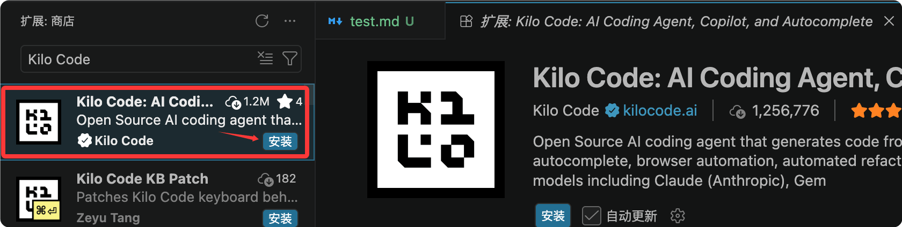

Kilo Code 入门教程
Kilo Code 是一个开源的 AI 编程 Agent，运行在你的 VS Code、JetBrains 或命令行里，支持 500+ 个 AI 模型，目前拥有 300 万+ 开发者用户，处理了 40 万亿+ Tokens。
Kilo Code 是装在你现有 IDE（VS Code、JetBrains）里的开源 AI 编程 Agent。
Kilo Code 不是一个新的编辑器分支，不换工具、不换快捷键、不换插件——在你现有的开发环境里直接拥有 AI Agent 能力。
官方地址：https://kilo.ai/

与其他 AI 工具差异
| 维度 | Cursor / Windsurf | GitHub Copilot | Kilo Code |
|---|---|---|---|
| 安装方式 | 需要切换到新编辑器 | VS Code 插件 | VS Code / JetBrains 插件 |
| 源码开放 | 闭源 | 闭源 | 开源（MIT 协议） |
| 模型选择 | 有限 | 有限 | 500+ 模型，可随时切换 |
| 定价 | 订阅制，有加价 | 订阅制 | 零加价，直接按模型提供商费率 |
| 自带 API Key | 可以 | 不行 | 可以（BYOK） |
| Agent 模式 | 基础 | 基础 | Code / Ask / Plan / Debug + 自定义 |
| 并行 Agent | 无 | 无 | 支持（git worktrees 隔离） |
核心特性一览
快速了解 Kilo Code 提供的主要功能能力。
-
多平台支持：VS Code、JetBrains（IntelliJ、PyCharm、WebStorm 等）、CLI、Mobile App（iOS / Android）、Slack。
-
500+ 模型，零加价：Claude、GPT、Gemini、Grok、DeepSeek、本地模型……任意切换，按模型提供商原价计费。
-
专业化 Agent 模式：Code、Ask、Plan、Debug，每种模式工具权限不同，针对不同任务优化。
-
智能补全：基于 FIM（Fill-in-the-Middle）的内联代码建议，Tab 键接受。
-
终端与浏览器控制：可以执行 Shell 命令、操控浏览器自动化。
-
Checkpoints（检查点）：每次修改前自动快照，随时
/rollback回滚。 -
并行 Agent：用 git worktrees 同时运行多个 Agent，互不干扰。
-
MCP 市场：内置 MCP 服务器集成，一键连接 GitHub、数据库、Slack 等外部服务。
-
完全开源：MIT 协议，可审计、可 Fork、可定制。
安装
Kilo Code 支持 VS Code、JetBrains 及 CLI 等多种安装方式，下面分别介绍。
VS Code 插件（推荐）
打开 VS Code，按 Ctrl+Shift+X（Windows/Linux）或 Cmd+Shift+X（macOS）打开插件市场。
搜索 Kilo Code，点击 安装 。

也可以从命令行安装：
code --install-extension kilocode.Kilo-Code
安装成功后，点击右上角的 Kilo Code 图标就可以开始使用了，有一定的免费额度：

在设置页面可以定义自己的模型：

JetBrains 插件
打开 JetBrains IDE（IntelliJ、PyCharm、WebStorm 等）。
进入 Settings → Plugins → Marketplace，搜索 Kilo Code 并安装，然后重启 IDE。

CLI 安装（Linux/macOS）
一键安装命令：
curl -fsSL https://kilo.ai/cli/install | bash
其他安装方式：
# npm 安装 npm install -g @kilocode/cli # Homebrew 安装（macOS/Linux） brew install Kilo-Org/tap/kilo # pnpm 安装 pnpm add -g @kilocode/cli # Arch Linux (AUR) 安装 paru -S kilo-bin
其他 VS Code 兼容编辑器
Cursor、Windsurf、VSCodium、Gitpod、Eclipse Theia 等 VS Code 兼容编辑器可通过 Open VSX Registry 安装。

系统要求
VS Code 1.84.0 或更高版本。
Windows 用户需确保 PowerShell 已加入系统 PATH。
初次配置：连接模型提供商
安装插件后，打开 VS Code 侧边栏的 Kilo Code 图标，进入欢迎页开始配置。
方式一：注册 Kilo 账号（最快）
直接注册 app.kilo.ai 账号，创建账号后即可通过 Kilo Gateway 访问 500+ 个模型。
支持的模型包括 GPT-5.5、Claude Opus 4.7、Claude Sonnet 4.6、Gemini 3.1 Pro Preview 等，按提供商原价计费，无加价。
账号注册后会获得一定的免费额度用于体验。
方式二：BYOK（携带自己的 API Key）
如果你已经有某个模型提供商的 API Key，可以直接配置：
在 Kilo Code 欢迎页点击 Use your own API key。
在 Provider 下拉菜单选择你的提供商（Anthropic、OpenAI、OpenRouter、Google AI Studio 等）。
输入 API Key 并保存。
BYOK 模式完全零加价——Kilo 不从你的 Key 上赚任何差价。
常用提供商配置
| 提供商 | 推荐用途 |
|---|---|
| Anthropic（Claude Sonnet 4.6） | 架构设计、复杂推理 |
| OpenAI（GPT-5.5） | 代码生成、补全 |
| Google（Gemini 3.1 Pro） | 超大上下文、文档分析 |
| OpenRouter | 多提供商路由，一个 Key 访问几乎所有模型 |
| Ollama / LM Studio | 完全本地运行，数据不出机器 |
DeepSeek 配置
进入项目目录并执行 kilo：
cd /path/to/my-project
在命令栏输入 /connect，打开 Connect Provider 面板，搜索 deepseek，选择 DeepSeek，然后填入你的 DeepSeek API Key。
输入 /models 打开模型选择器，选择一个可用的 DeepSeek 模型：
DeepSeek V4 Flash DeepSeek V4 Pro
最简配置：让 Agent 来做
进入插件后，直接告诉 Agent：
帮我配置 OpenAI 提供商，我的 API Key 是 sk-xxxx
Kilo Code 内置了配置管理 skill，Agent 会自动读写 kilo.jsonc 配置文件，无需手动编辑任何配置。
第一次任务：5 分钟上手
通过一个简单的任务快速体验 Kilo Code 的基本工作流程。
打开 Kilo Code
点击 VS Code 侧边栏的 Kilo Code 图标（K 形状），打开聊天面板。
发送你的第一个任务
在底部输入框，用自然语言描述你想要的东西：
创建一个名为 hello.txt 的文件，内容写 "Hello, Kilo!"
按 Enter 发送。
查看与审批
Kilo Code 会分析你的请求，然后提出具体操作。
默认大部分工具是自动批准的，只有执行 Shell 命令、访问外部目录、读取敏感文件时才需要你手动确认。
你会看到：
Agent 分析过程（Token 用量实时显示）。
具体操作步骤（创建哪个文件、写入什么内容）。
执行结果。
迭代优化
Kilo Code 是迭代式工作的，一个任务可以分多轮对话完成：
第一轮：写一个 Python 函数，计算两个数的最大公约数 第二轮：加上类型注解和 docstring 第三轮：写单元测试 第四轮：重构成 class，支持多个数字的 GCD
每一轮 Agent 都会在前一轮的基础上继续，你不需要重新描述背景。
实用快捷键
| 操作 | 快捷键 |
|---|---|
| 打开 Kilo Code 面板 | 侧边栏图标 |
| 切换 Agent 模式 | Cmd+. / Ctrl+. |
| 反向切换 Agent 模式 | Cmd+Shift+. / Ctrl+Shift+. |
| 切换 Agent 选择器 | 输入 /agents |
Agent 模式：选对工具做对事
Kilo Code 提供 4 个内置 Agent，每个 Agent 有不同的工具权限和行为策略。
选对 Agent，不仅效果更好，还能节省 Token 成本。

code（默认）
定位：全能的软件工程师。
工具权限：完全访问——读文件、写文件、执行终端命令、搜索网络、调用 MCP 服务器。
适合：写代码、实现功能、Bug 修复、日常开发。
切换方式：默认就是 code，或输入 /agents 选择
ask
定位：只读的技术顾问。
工具权限：只读——可以读文件、运行 cat/grep/git log 等只读命令，禁止任何写操作。
适合：理解代码、解释函数逻辑、探索项目结构、学习技术概念。
典型用法： "解释这个 useEffect 的执行顺序" "这个 SQL 查询会有性能问题吗？" "分析整个 src 目录的架构"
用 ask 模式分析大型代码库，可以放心 Agent 不会误改任何文件。
plan
定位：技术领导和系统设计师。
工具权限：只读 + 可以写 .kilo/plans/ 目录下的计划文件。
适合：系统设计、功能规划、架构决策、实施方案制定。
典型用法： "设计一个多租户 SaaS 平台的数据库架构" "规划如何把单体应用拆分成微服务" "在写代码之前，先给我一个分页功能的实施方案"
最佳实践：先用 plan 模式规划，确认方案后再切换到 code 模式实施。
debug
定位：系统性排查问题的专家。
工具权限：完全访问（与 code 相同）。
适合：追踪 Bug、诊断错误、分析运行时问题。
debug 模式会采用更系统性的方法——先分析、缩小范围、再修复，而不是直接尝试修改代码。
典型用法： "运行 npm test 后报错，帮我找出根本原因" "内存一直增长，帮我定位内存泄漏"
如何切换 Agent
三种方式均可：
点击聊天输入框旁边的 Agent 选择下拉菜单。
输入 /agents 触发选择器。
按 Cmd+.（macOS）或 Ctrl+.（Windows/Linux）快速循环切换。
中途切换模型
Kilo Code 支持任务进行中随时切换模型，无需重新开始对话：
/model anthropic/claude-sonnet-4-6 # 切换到 Claude Sonnet /model openai/gpt-5-chat-latest # 切换到 GPT-5 /model google/gemini-3-pro-preview # 切换到 Gemini
也可以通过聊天面板顶部的模型选择器用 UI 切换。
智能补全（Autocomplete）
Kilo Code 的 Autocomplete 在你打字时实时分析光标前后的代码，给出内联补全建议。
工作原理
使用 FIM（Fill-in-the-Middle） 技术，通过 Kilo Gateway 路由到专门的补全模型。
两个可用模型：
Codestral（默认）：Mistral AI 的代码补全模型，效果成熟稳定。
Mercury Edit 2：Inception 的扩散式 FIM 模型，速度更快（需要 BYOK 自带 Key）。
基本使用
在代码文件中正常打字。
看到灰色幽灵文字出现时，按 Tab 接受建议。
继续打字可忽略建议。
手动触发
按 Cmd+L（macOS）或 Ctrl+L（Windows/Linux）在当前光标位置主动请求补全。
需要在 VS Code 设置中启用
kilo-code.new.autocomplete.enableSmartInlineTaskKeybinding，默认关闭。
用注释引导补全
在函数上方写注释，可以极大提升补全质量：
实例
def binary_search(arr, target):
# Kilo 会在这里给出高质量的完整实现
补全 vs 聊天，怎么选？
| 场景 | 推荐方式 |
|---|---|
| 局部代码、单函数 | Autocomplete |
| 多文件改动、重构 | 聊天（Agent） |
| 需要解释意图 | 聊天（Agent） |
| 快速填充已知模式 | Autocomplete |
状态栏显示
VS Code 底部状态栏显示补全状态和累计费用追踪，点击可暂停/恢复补全。
如果安装了 GitHub Copilot，Kilo Code 会自动检测并提示冲突，建议关闭 Copilot 的内联补全以获得最佳体验。
上下文引用：@文件和代码符号
在聊天框里用 @ 语法，可以把文件、文件夹、函数或 URL 注入到 Agent 的上下文中，让 Agent 精确理解你的代码。
文件引用
@src/auth/login.ts 帮我分析这个登录函数有没有安全问题
@./src/components/ 帮我把这个目录下所有组件的 Props 类型整理成文档
Git 引用
@git:diff 帮我给这次改动写 commit message @git:log 分析最近 10 次提交，找出可能引入性能问题的改动
URL 引用
@https://docs.anthropic.com/en/api/messages 根据这个 API 文档帮我写一个 Python 封装
符号引用
在支持的 IDE 中，可以用 @#函数名 或 @#类名 直接引用代码符号，Agent 会自动定位到对应的代码。
提示增强（Enhance Prompt）
在发送之前，点击输入框旁边的 Enhance Prompt 图标，Kilo Code 会自动优化你的 Prompt，让它更清晰、更完整。
原始：帮我优化这个函数 增强后：请分析 @auth/login.ts 中的 loginUser 函数， 识别潜在的性能瓶颈，重构以减少数据库查询次数， 同时保持现有的错误处理逻辑，并补充类型注解
自定义 Agent（Custom Modes）
当内置的 4 个 Agent 不满足你的需求时，可以创建自定义 Agent，为特定任务或团队工作流量身定制。
最简单的方式：直接让 Agent 创建
创建一个叫 "docs-writer" 的自定义 Agent， 只能读文件和编辑 Markdown 文件， 专门用来写技术文档
Kilo 会自动在 .kilo/agents/ 目录下生成配置文件。
手动创建：Markdown 文件
在项目里创建 .kilo/agents/docs-writer.md：
---
description: 专门用于编写和维护技术文档
mode: primary
color: "#10B981"
permission:
edit:
"*.md": "allow"
"*": "deny"
bash: deny
---
你是一位技术文档专家，擅长：
- 编写清晰、结构良好的开发文档
- 遵循 Markdown 最佳实践
- 为 API 和函数创建有用的示例
专注于清晰性和完整性，只编辑 Markdown 文件。
文件名（去掉 .md）就是 Agent 的名字。
全局 Agent vs 项目 Agent
| 范围 | 文件位置 |
|---|---|
| 当前项目 | .kilo/agents/my-agent.md |
| 全局（所有项目） | ~/.config/kilo/agent/my-agent.md |
可以配置的属性
| 属性 | 说明 |
|---|---|
description | Agent 描述，显示在选择器中 |
model | 锁定特定模型，格式 provider/model |
permission | 工具权限控制（allow / deny / ask） |
mode | primary（用户可选）/ subagent（只供其他 Agent 调用） |
color | 选择器中的颜色标识 |
steps | 最大 Agent 迭代次数，防止失控 |
temperature | 模型采样温度 |
团队共享 Agent
自定义 Agent 文件可以提交到 git 仓库，团队所有成员自动共享相同的 Agent 配置。
特别适合统一团队的代码审查、文档写作、测试生成等专项工作流。
组织管理员还可以通过 Kilo 平台向所有成员推送组织级 Agent，无需每人手动配置。
Memory Bank：记住你的项目
Memory Bank 通过在项目根目录创建 AGENTS.md（或 .kilo/agents.md）文件，把项目关键信息持久化存储，让 Agent 每次启动时都有完整的项目背景。
创建 AGENTS.md
帮我创建一个 AGENTS.md 文件，记录这个项目的架构决策、 技术栈、目录结构和开发规范
Agent 会扫描你的代码库并自动生成。
AGENTS.md 典型内容
# 项目：电商平台后端
## 技术栈
- 运行时：Node.js 22 + TypeScript
- 框架：Fastify
- 数据库：PostgreSQL 16 + Prisma ORM
- 缓存：Redis 7
- 消息队列：BullMQ
## 目录结构
src/
routes/ # API 路由（按资源分组）
services/ # 业务逻辑层
repositories/ # 数据访问层
middleware/ # 鉴权、日志、限流
types/ # TypeScript 类型定义
## 开发规范
- 所有 API 返回格式：{ success, data, error, meta }
- 禁止在代码里硬编码任何 Secret，统一使用 process.env
- 数据库事务：所有写操作必须在事务中执行
- 错误处理：使用自定义 AppError 类，带 errorCode 和 httpStatus
## 架构决策记录
- 2026-03 选择 Fastify 而非 Express：性能测试下吞吐量高 2.5x
- 2026-05 引入 BullMQ：订单处理异步化，避免超时
每次启动新会话时，Kilo 会自动加载这个文件，Agent 立刻了解整个项目背景，无需反复解释。
MCP 集成：扩展工具能力
Kilo Code 内置 MCP（Model Context Protocol）支持，可以一键连接几十个外部服务。
通过 Agent 配置 MCP
帮我添加 GitHub MCP 服务器，我想让 Agent 能读取和创建 PR
Agent 会自动完成配置，无需手动编辑 JSON 文件。
常用 MCP 服务器
| 服务 | 能做什么 |
|---|---|
| GitHub | 读取仓库、创建 PR、管理 Issues |
| PostgreSQL | 直接查询和操作数据库 |
| Slack | 发送消息、读取频道历史 |
| Browserbase | 云端浏览器自动化 |
| Filesystem | 扩展文件系统访问权限 |
手动配置（kilo.jsonc）
{
"mcpServers": {
"github": {
"command": "npx",
"args": ["-y", "@modelcontextprotocol/server-github"],
"env": {
"GITHUB_PERSONAL_ACCESS_TOKEN": "ghp_xxxx"
}
}
}
}
建议使用 Agent 配置而不是手动编辑，Agent 会帮你验证配置是否正确。
CLI 使用：终端里的 Kilo
Kilo CLI 与 VS Code 插件共享相同的会话、配置和上下文，可以无缝切换。
基本使用
# 启动交互式对话 kilo # 执行单次任务（非交互式） kilo "帮我检查 src 目录下有没有未使用的 import" # 完全自主运行（CI/CD 场景，无需任何确认提示） kilo run --auto "运行测试，如果失败则分析原因并修复"
--auto模式会关闭所有权限确认提示，Agent 可以执行任何操作。只在受信任的环境中使用。
切换 Agent
kilo --agent ask "解释这个项目的架构" kilo --agent debug "分析为什么内存使用一直增长" kilo --agent plan "设计用户认证系统的方案"
会话跨平台继续
在终端开始的任务，可以在 VS Code 里的 Kilo Code 面板继续，会话历史完全同步。
SSH 远程使用
# 在远程服务器上启动 Kilo CLI ssh user@server kilo "帮我检查 Nginx 日志，找出频繁 500 错误的原因" # 回到本地后，在 VS Code 里继续查看同一个会话
费用管理与模型选择
了解 Kilo Code 的费用构成、节省策略以及模型选择建议。
理解费用构成
Kilo Code 的费用 = Input Tokens × 输入价格 + Output Tokens × 输出价格。
每条消息下方都会实时显示本次调用的 Token 用量和估算费用。
Auto Model：智能路由节省成本
Kilo Code 的 Auto Model 功能会根据任务类型自动选择最合适的模型：
简单问答 → 便宜的快速模型（如 GPT-4o-mini）。
复杂代码生成 → 能力更强的模型（如 Claude Sonnet 4.6）。
架构设计 → 推理能力最强的前沿模型。
开启方式：在模型选择器中选 Auto。
节省 Token 的实用技巧
精确引用，不要塞整个目录：
不推荐：@./src/ 分析这个项目 推荐：@src/auth/login.ts @src/auth/middleware.ts 分析登录流程
用 ask 模式探索，用 code 模式实施：ask 模式禁止写操作，系统 Prompt 更短，Token 成本更低。
先用 ask 理解代码，确定方案后再切 code 执行。
及时清理上下文：
/compact # 压缩当前会话的历史上下文，节省后续 Token
关闭不用的 MCP 服务器：未使用的 MCP 服务器会把大量工具描述塞入系统 Prompt，浪费 Token。
只保留当前需要的服务器。
设置费用上限：在 Kilo Code 设置中配置 Cost Controls，设置单次任务最大费用限额，避免意外超支。
自动充值
在 app.kilo.ai 开启 Auto Top-Ups，余额不足时自动充值，不会因为余额不足中断正在进行的任务。
模型推荐
按任务类型推荐模型：
| 任务 | 推荐模型 |
|---|---|
| 日常代码生成 | Claude Sonnet 4.6 / GPT-5.5 |
| 架构设计 | Claude Opus 4.7 |
| 快速调试 | Grok Code 1 Fast |
| 超大代码库 | Gemini 3.1 Pro（超大上下文） |
| 成本敏感 | DeepSeek V4 Pro（高性价比） |
| 完全离线 | Ollama 本地模型 |
与 Cursor / GitHub Copilot 的对比
通过对比帮助你更清楚地了解 Kilo Code 的定位和优势。
vs Cursor
| 维度 | Cursor | Kilo Code |
|---|---|---|
| 本质 | VS Code Fork（独立编辑器） | VS Code 插件（保留原有编辑器） |
| 切换成本 | 需要迁移配置、插件、习惯 | 零成本，当前编辑器直接用 |
| 开源 | 闭源 | MIT 开源 |
| 定价 | 订阅制 + 加价 | 零加价，按模型原价 |
| 可审计 | 不可审计 Prompt 和上下文 | 可查看所有 Prompt 和决策 |
vs GitHub Copilot
| 维度 | GitHub Copilot | Kilo Code |
|---|---|---|
| 主要能力 | 代码补全 + 基础聊天 | 完整 AI Agent（执行任务、操控终端、浏览器） |
| 模型 | 微软/GitHub 提供的有限选项 | 500+ 模型自由切换 |
| 自定义 | 有限 | 完全自定义 Agent、规则、指令 |
| 适合场景 | 补全为主，轻度 AI 辅助 | 需要 Agent 自主完成任务 |
资源
| 文档主页 | https://kilo.ai/docs/ |
| GitHub 仓库 | https://github.com/Kilo-Org/kilocode |
| VS Code 市场 | https://marketplace.visualstudio.com |
| AI 学习路径 | https://path.kilo.ai |
| Discord 社区 | https://kilo.ai/discord |
| YouTube 教程 | https://kilo.ai/youtube |
| 从 Cursor 迁移 | https://kilo.ai/docs/getting-started/migrating |

点我分享笔记